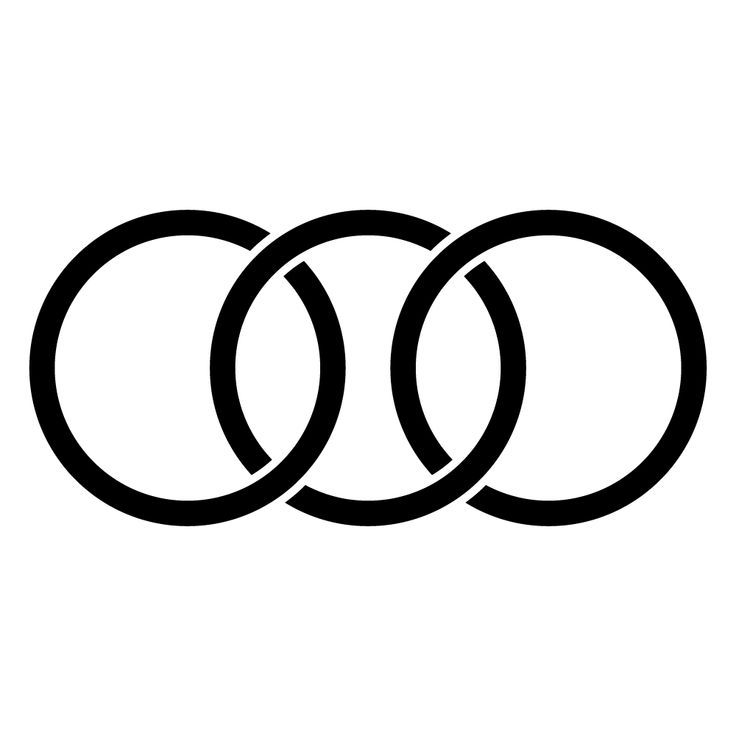
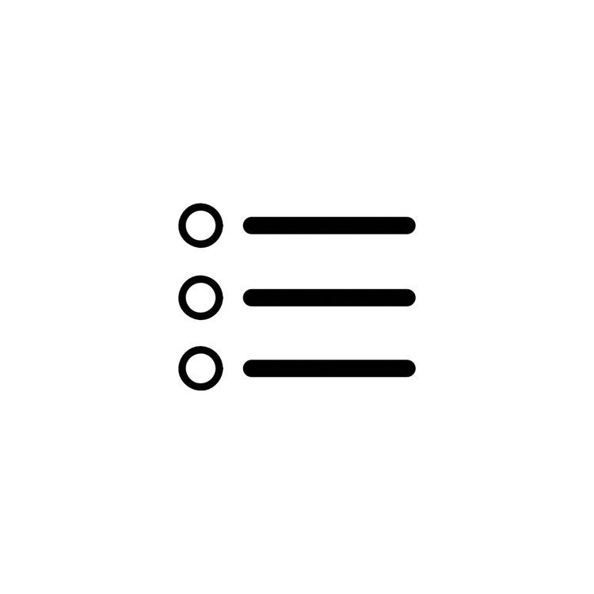

creative developpeur
bienvenue, je suis
koumazan agbeko
Explorez mes realisationset
plongez dans des experiences digitales
concu pour inspirer ,
seduire et offrir des solutions digitale a chaque projet
A propos de moi
Je suis passionné par le développement d’applications web et mobiles,
avec un œil attentif pour le
design UI/UX et l’expérience .
J’aime transformer des idées en solutions digitales concrètes
et
créer des expériences interactives qui captivent et inspirent.
Collaborons pour construire ensemble
l’avenir du numérique et donner vie à vos projets.
50+
Projets réalisés
5+
Années d’expérience
30+
Clients Satisfaits
Services
Transformons vos idées en solutions concrètes !br Je vous accompagne dans la création d’applications web et mobiles,
de designs attractifs et de projets numériques performants, conçus pour captiver vos
utilisateurs.
Design
Je suis spécialisé dans le design
UI/UX pour le web et le mobile,
en
créant des interfaces attrayantes,
intuitives et centrées sur
l’utilisateur

Développement Web
Je conçois et développe des sites
web
performants et adaptés aux
besoins de vos utilisateurs
Développement
Mobile Je crée des applications mobiles fluides et intuitives,
pour Android
et iOS, répondant aux exigences

Formation
propose des formations
pratiques
et personnalisées pour
vous aider à maîtriser le
développement web,
mobile et le
design UI/UX.
Mes réalisations
Découvrez quelques-uns de mes projets récents,
où design, technologie et créativité se rencontrent
pour donner vie à des expériences digitales uniques.

.jpeg)
.jpeg)
.jpeg)